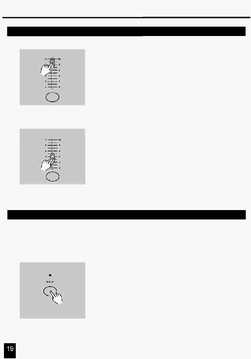

2. Опис інструкцій
2.3.1 Виконання послідовності Програм
4. Установіть в максимальне положення повзунок Каналу (25-48),
щоб викликати бажану програму, що буде наростати залежно від
перебігу часу переходу.
Ви можете натиснути й утримувати натиснутою відповідну кнопку
Flash (25-48), щоб викликати виконання бажаної програми.
5. Перемістіть повзунок Channel для установки необхідного рівня
виходу поточної програми.
Перемістіть повзунок Каналу, щоб пристосувати продукцію
2.3.2 Запуск Програми від Аудіо входу
1.
Використайте убудований мікрофон або підключите зовнішнє
джерело аудіо сигналу через гніздо RCA Audio.
2. Виберіть Програму, як описано вище.
3.
Натисніть кнопку Audio поки не засвітиться її індикатор,
указуючи, що запущено режим Audio.